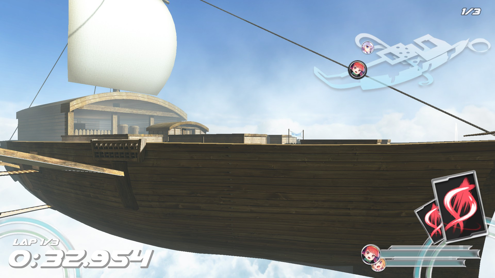
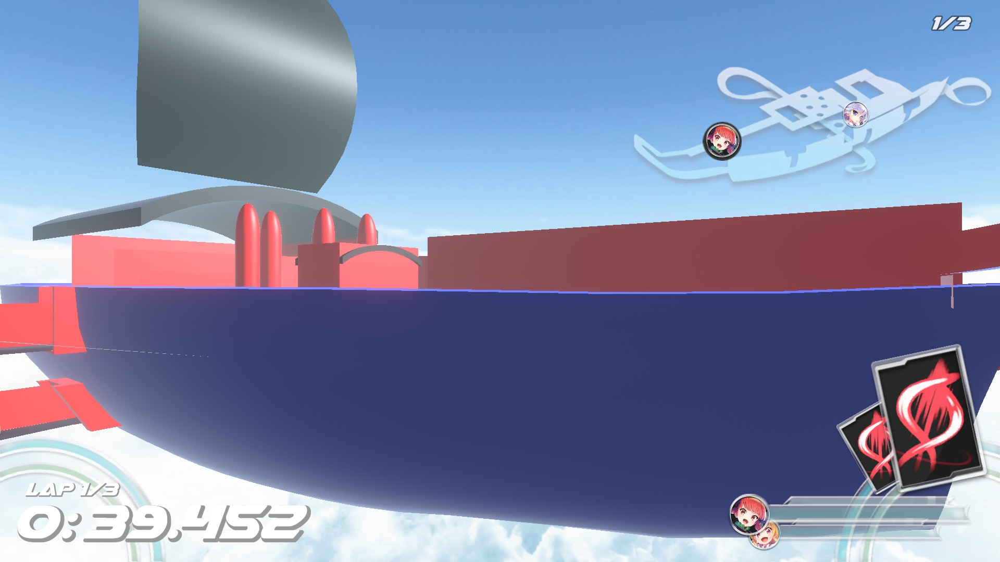
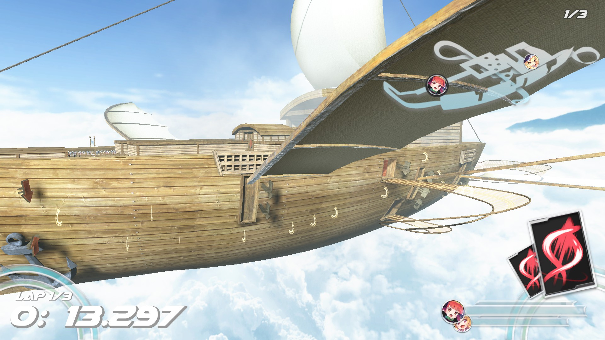
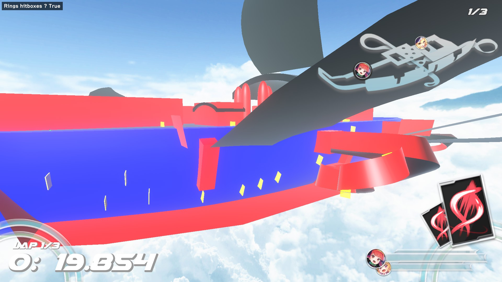
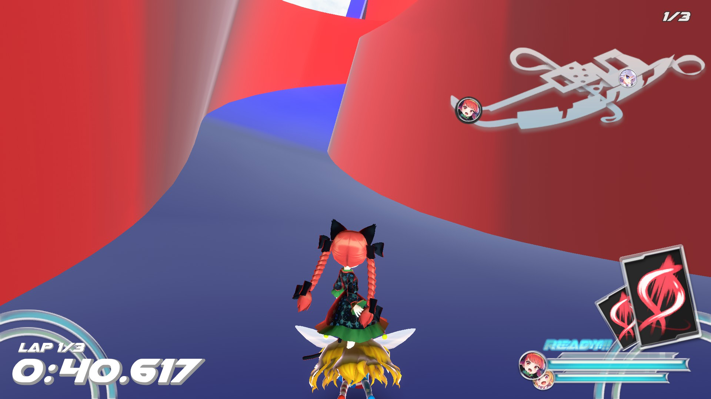
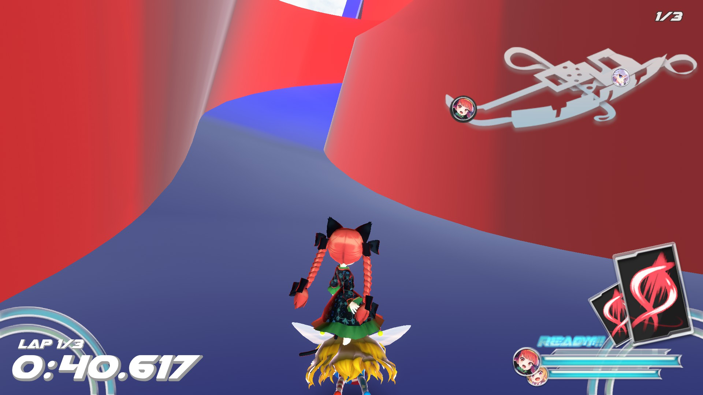

Go back to : Skydrift research homepage
NoJump areas in Gensou Skydrift
Mods designed for research purposes were used to create this document and screenshots / footages.
Blue areas are NoJump areas.
Other 2 important ones are : black for regular ground & red for walls.
MC1-1 Second ramp, after the first shortcut at the beginning of the track.

FoM-1 Lower parts of the log for log NISC.


FoM-2 The cave, almost entirely.


HV-1 Rooftop of the first houses, next to the first shortcut of the track.

HV-2Stone path & exit ramp of the first shortcut of the track, in the river.

HV-3Ground on the last shortcut of the track, at the last corner.

Basically, the whole external part of the hull, with some parts appearing slightly in part of the track.
   
SEI-1
First yellow path, at the end, for a tiny bit when falling off it (both sides).
(On the first screenshot, looking at the 10th line (Ground type), we see there's a bit of NoJump below Clownpiece)
SEI-2 Just before the yellow path where Time Attack usually uses Cradle, the line where the ring.
SEI-3 Entire side of the hull, right after the red ring, until the last yellow path of the track.
SEI-4 Last yellow path of the track.
 

HAKU-1Grass patch on the right at the end of the track.

ML-1Top of the bridge before the spiral (the one characters with good air stat usually skip by flying to its left).

OC-1 Ramp at the end of the first short cut.

OC-2 Most of the ground at the ending cut (when ending NISC was a success)

OW-1Entire section at the beginning of the race (before & after the finish line), except the last jump.
UCD-1Entire section at the beginning of the race (before & after the finish line) until the 90° is done (see 2nd image).